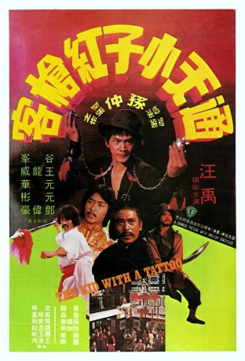

#11935 Der Tätowierte Adler
 
 IMDB-Wertung: 6.3 / 10
IMDB-Wertung: 6.3 / 10  Metascore: 0
Metascore: 0 
Starring kung-fu comedienne Wang Yu, a kid on a mission of justice, this film features plentiful ripsnorting martial arts by Jackie Chan's kung-fu classmates Yuen Hua and Yuan Pin, and Shaw Brothers' best martial arts fighting villain Wang Lung-wei.
Jahr: 1980
Dauer: 80 Minuten
FSK: 16
Land: Hong-Kong Studio: Koch MediaTonspuren:
Untertitel: Deutsch,
Auflösung: 1080p (1920x816) Größe: 5601 MB
Genre: Action, Komödie
Regisseur: Chung Sun
Drehbuch: Kuang Ni
Soundtrack: Eddie Wang
Darsteller:
Datei: X:\NEU\Tätowierte Adler, Der (1980, FSK16, 1920x816).mkv seit 26.10.2019
 Es gibt insgesamt 187 Filme in der Gruppe 'NEU'
Es gibt insgesamt 187 Filme in der Gruppe 'NEU'